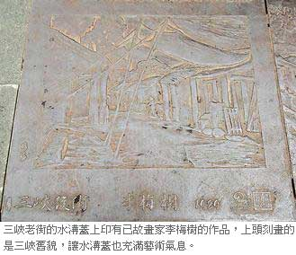

三峽老街 水溝蓋上刻歷史
黃莞皓｜聯合報／都會∣2012年1月4日
到三峽老街一遊的您，有沒有注意過腳下踩的水溝蓋呢？在老街裡的每一面水溝蓋，都刻有三峽區各著名景點的介紹；附近店家說，這樣的巧思很特別，可惜很少遊客注意到「三峽老街連水溝蓋都像藝術品！」
祖師廟、茶葉、歷史文物館、老街景色、河畔風光和已故畫家李梅樹的作品，這些代表三峽的在地元素，都可以在水溝蓋上看到；歷史背景的文字介紹搭配景點風貌，讓整條老街的水溝蓋藝術化，向遊客娓娓訴說三峽的傳統特色和歷史。
帶女友到老街觀光的遊客王先生說，來三峽很多次，都沒有發現這裡的水溝蓋很特別，還是女友提醒他，才開始注意這個特別的創意。
王先生說，水溝蓋給人的印象很冰冷和髒亂，甚至不是很美觀，但三峽老街的水溝蓋經過美化後，「就算水溝蓋再多，也不會給人破壞市容的感覺吧」。
附近店家說，三峽老街經過多次重建，這些水溝蓋是在2006年重建時裝上的，「水溝蓋變漂亮了，也好像在幫遊客上歷史課！」店家們樂於在客人來時，主動介紹這些水溝蓋，還有不少遊客對著水溝蓋猛拍照，儼然變成另類的觀光景點。